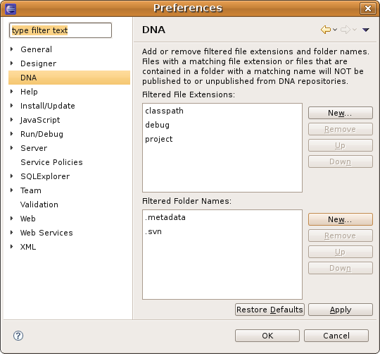
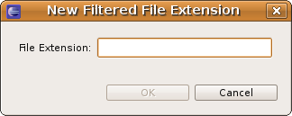
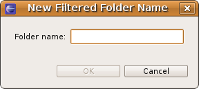

The DNA Preferences Page provides settings that control what files are included in publishing and unpublishing operations. A publishing operation occurs when the selected files in your local workspace are uploaded to a specific DNA repository workspace. While an unpublishing operation occurs when the selected files in your local workspace are removed from a specific DNA repository workspace. The Filtered File Extensions preference and the Filtered Folder Names preference each provide a way to filter out certain files from these operations.
Here is what the DNA Preferences Page looks like:
New... button to display the following dialog:

New... button to display the following dialog:
